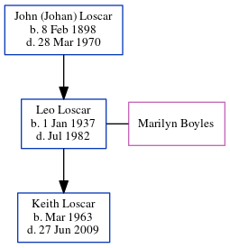

Leo Loscar 1937 - 1982
[ Home ] | [ Calendar ] | [ Surnames Index ] | [ Family History ]The child of John (Johan) Loscar, Leo Loscar, the first cousin once-removed on the mother's side of Michele Copp (née Phillips), was born on Jan 1, 19371 and had 1 child with Marilyn Newlon Boyles: Keith.
He died in Jul 1982 in Parkersburg, Wood, West Virginia, USA1.
Parents
- John (Johan) was born on Feb 8, 1898
Children
- Keith was born in Mar 1963
Citations
- Social Security Death Index Online publication - Provo, UT, USA: MyFamily.com, Inc., 2006.Original data - Social Security Administration. Social Security Death Index, Master File. Social Security Administration.Original data: Social Security Administration. Social Security Death Inde
Family Tree
Generated by ged2site. Last updated on Jun 25, 2024